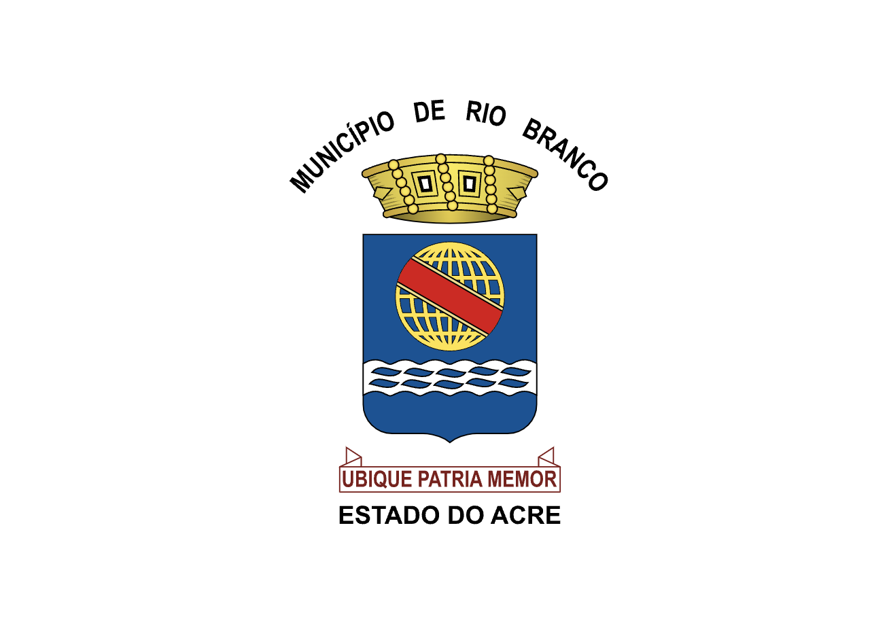
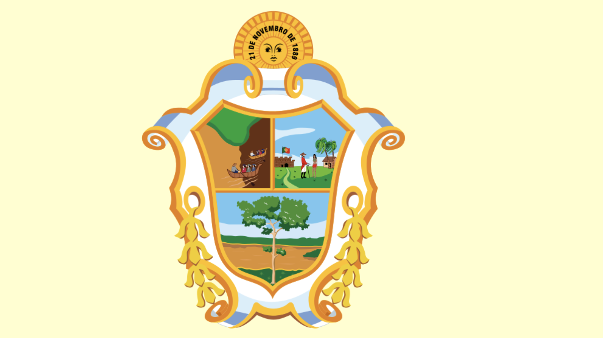
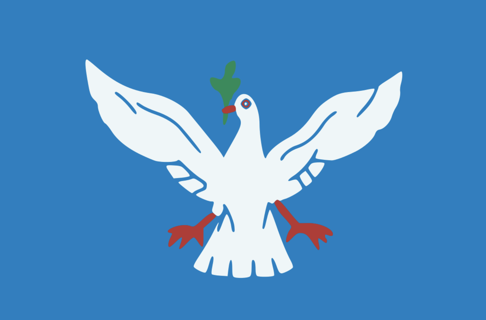

Estados e algumas capitais
Rio Branco

Rio Branco é a capital do estado do Acre (AC).
Área territorial: 8.835km²
População: 350mil habitantes.
Curiosidade: de “Capital da Natureza”, em razão dos seus atributos naturais.
São Paulo

São Paulo capital do estado de São Paulo
Área territorial: 1.521 km²
População: 12 milhões de habitantes
Curiosidade: maior cidade do país é considerada uma metrópole mundial brasileira.
Macapá

Macapá capital do estado do Amapá
Área territorial: 6.407 km²
População: 522.357 de habitantes
Curiosidade: o 51º município mais populoso do Brasil e o quinto mais populoso da Região.
Maceio

Maceio capital do estado do Alagoas
Área territorial: 509,6 km²
População: 1,025 milhões de habitantes
Curiosidade: A décima quarta capital brasileira a ultrapassar a marca de um milhão de habitantes residentes, e a quinta do Nordeste.
Manaus

Maceio capital do estado do Amazonas
Área territorial: 11.401 km²
População: 2,02 milhões de habitantes
Curiosidade: Principal centro financeiro, corporativo e mercantil da Região Norte do Brasil.
Salvador

Salvador capital do estado da Bahia
Área territorial:693,8 km²
População: 3.919.864 de habitantes
Curiosidade: Situada na Zona da Mata da Região Nordeste do Brasil, Salvador é notável em todo o país pela sua gastronomia, música e arquitetura, reconhecidas também internacionalmente.